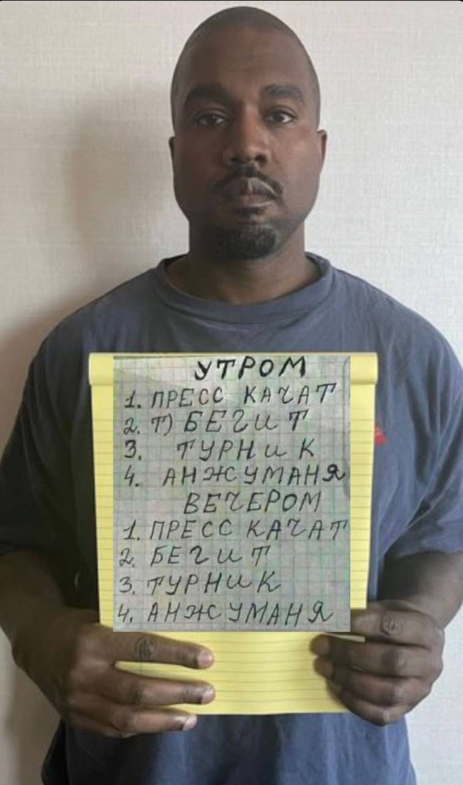
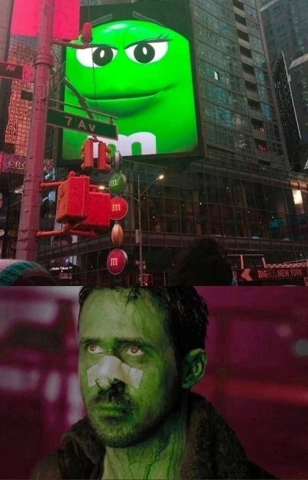
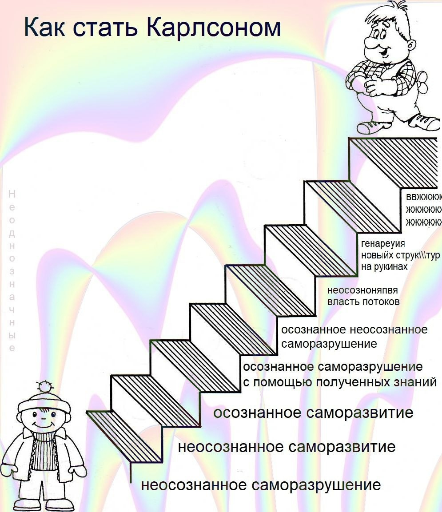
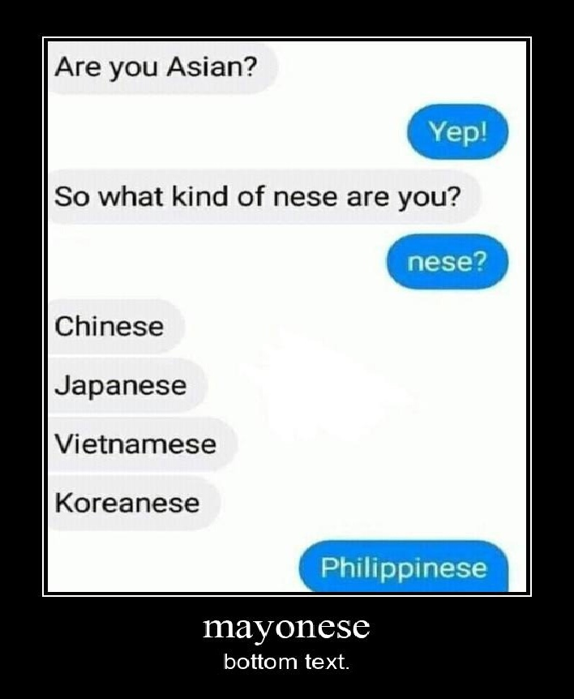
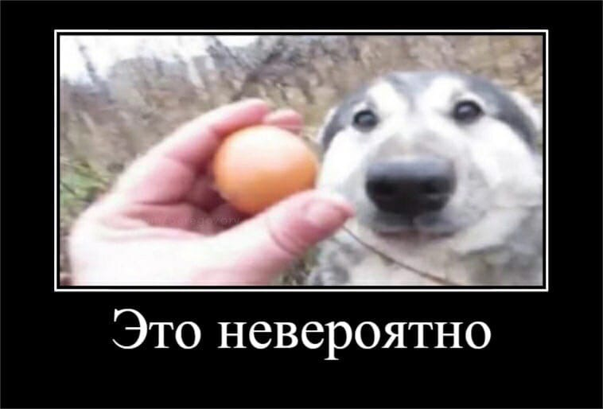
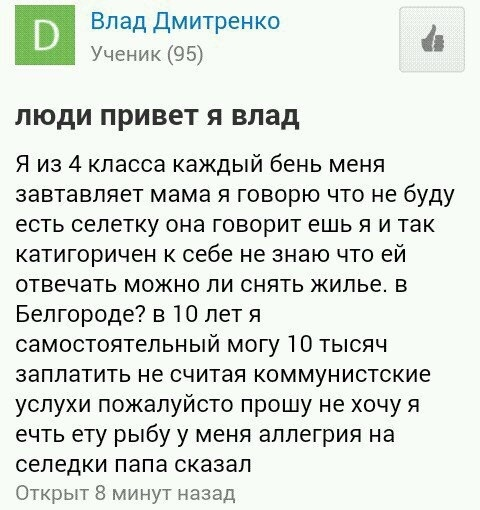

Итак, добавлю парочку деталей к образу. Так как я являюсь мазохистом уверенным в себе человеком
- обучаюсь на третьем курсе кафедры МОП ЭВМ.
Благодаря творческому проекту мне полюбился backend (назад конец), а с началом стажировочки я просто счастлив
выполнять действия кнопкодавительного характера.
Ну и если всех этих фактов не достаточно для составления точной картины моей личности, вот моя кошечка

Ее зовут Хината и она отжала мой стул, будьте знакомы
Нет, здесь не будет макдональдса (и вкусных точек тоже)
Расскажу про свои увлечения, кроме программирования, мне очень нравится играть в волейбол, покер,
настолочки, читать книжечки, смотреть фильмы.
Да, конечно же я стараюсь держать себя в форме и тренируюсь по такому расписанию:

| непосредтвенно прикол | оценка | -комментарий |
|---|---|---|
|  | 5.2 драйвов /10 | -прикол скорее забавный, чем смешной, но Райан Гослинг это Райан Гослинг |
|  | 5.9 антидепрессантов /10 |
-прикол является субъектом постмодерна и происходит утрата категории смысла, чуть-чуть смеемся, чуть-чуть плачем |
|  | 7.9322 mayonese'ов /10 | -ну тут уже уровень выше предшетсвенников, очень даже хорошая забава |
|  | 100 перепелиных яиц /10 | -комментарии излишни, это невероятно |
|  | 8 коммунистических услух /10 | -наблюдаем комедию положения, Владос не сдавайся, все через такое прошли |
В моем идеальном государстве я буду главным, а устройство будет представлять собой.
смесь монархии и коммунизма
(c) Виталий, 9 палата